1032B10 toothed timing belt - r + r for timing adjustment or replacement
- Path
- Procedures > 10 ENGINE UNIT > 1032 TIMING SYSTEM > 1032B belt timing system > 1032B10 toothed timing belt - r + r for timing adjustment or replacement
- Kind
- repair procedure (removal / refitting; the operation number is the code)
- Applies to
- engines: 1.6 16v; all production periods
- Interactive page
- https://sloeber94.github.io/elrnDB-fMltpl/en/#/2891221
Applies to: engines: 1.6 16v; all production periods
 Removing
Removing
 Refitting
RefittingWith the ignition key in the OFF position, disconnect the battery negative terminal.
Place the car on a ramp.
4450B10 Front WHEEL (one) - R.R.
7055B42 Additional FRONT WHEEL ARCH (one), left or right - R.R.
1092B50 alternator/air conditioner compressor drive belt - adjust tension
1. Position a dial gauge (1a), supported by a pointer (1b) in the housing for cylinder no. 1.
Turn the crankshaft with small, even movements until the dial gauge shows the cylinder no. 1 piston is at TDC.
 | Name | Country |
|---|---|---|
1b | Probe mount | 1.860.895.000 |
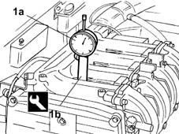
Applies to: engines: 1.6 16v; all production periods
1. Turn the crankshaft in its normal direction of rotation to align notch (1a) on the crankshaft pulley with ridge (1b) on the timing belt guard. Notch (1c) should now be aligned with rpm sensor (1d).
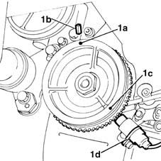
Applies to: engines: 1.6 16v; all production periods
1032D12 timing system protective cover(s) - r + r
1. Remove the tensioning device (1a) for the auxiliary shaft drive belt acting on the bolts (1b) to allow the subsequent positioning of the timing tool at '0'.
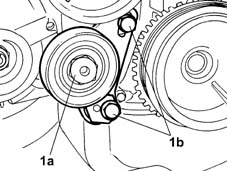
Applies to: engines: 1.6 16v; all production periods
1. Using the dial gauge, recheck that the piston for cylinder no. 1 is at TDC then, using the bolt (1a) fixing the timing belt guard, fasten the fixed reference (1b) in the housing used for the actual bolt.
| Name | Country |
|---|---|---|
1b | Fixed index for engine timing graduated disc | 1.860.896.000 |
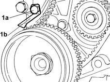
Applies to: engines: 1.6 16v; all production periods
1. Fit the base of the tool (1a) on the auxiliary shaft belt drive pulley, securing it using the bolt shown in the diagram, then fit the graduated disc on the support base ensuring that the '0' on the disc is aligned with the fixed reference positioned previously.
| Name | Country |
|---|---|---|
1a | Fixed index for engine timing graduated disc | 1.860.896.000 |
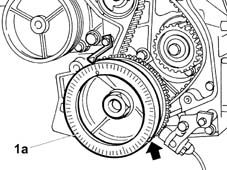
Applies to: engines: 1.6 16v; all production periods
1. Rotate the crankshaft through 10° in its normal direction of rotation as illustrated in the diagram using a special spanner on the nut (1a) fixing the auxiliary shaft drive pulley (1b); measure the piston axial movement on the dial gauge (e.g. 0.6 mm).
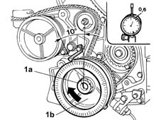
Applies to: engines: 1.6 16v; all production periods
1. Rotate the crankshaft in the opposite direction to its normal direction of rotation through about 20 degrees from its previous position (the fixed reference, as illustrated, should be at about 10 degrees) until the same axial movement figure measured previously appears on the dial gauge (e.g. 0.6 mm).
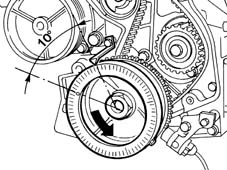
Applies to: engines: 1.6 16v; all production periods
1. Read the angle on the graduated disc corresponding to the previous axial movement (e.g. 8°). Take the arithmetical average of the angular value of the crankshaft set at the beginning of the procedure (10°) and the current value (8°), then release the graduated disc from its base, position it in relation to the fixed index, without rotating the crankshaft, at the value obtained from the arithmetical average (e.g. 9° = the average of 10° and 8°), then lock the graduated disc once again.
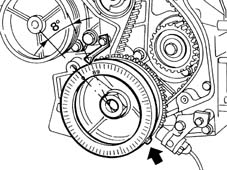
Applies to: engines: 1.6 16v; all production periods
1. Rotate the crankshaft pulley in a clockwise direction until the '0' on the graduated disc coincides with the fixed reference.
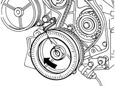
Applies to: engines: 1.6 16v; all production periods
1. Rotate the crankshaft through 10° clockwise and anti-clockwise, checking on the dial gauge that the reading for the clockwise rotation of the crankshaft is the same as that for the anti-clockwise rotation.
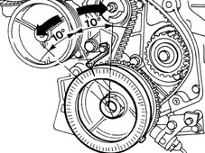
Applies to: engines: 1.6 16v; all production periods
1. Remove the rear covers (1a) for the camshafts acting on the fixing nuts and disconnecting the earth leads (1b) connected to them.
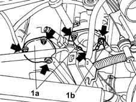
Applies to: engines: 1.6 16v; all production periods
With the piston at TDC (fixed reference at zero on the graduated disc), proceed with timing the camshafts following the instructions given below.
1. Position the first of the camshaft timing adjustment tools.
2. When fitting the tool, align the shaft seat (2a) with the key (2b) on the tool.
3. Tighten the tool retaining nuts.
| Name | Country |
|---|---|---|
1 | Template | 1.860.874.000 |
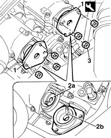
Applies to: engines: 1.6 16v; all production periods
1. Loosen the nut fixing the automatic belt tensioner in order to release the belt tension.
2. Remove the timing drive belt.
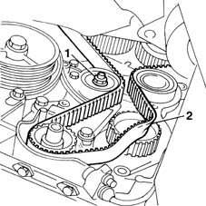
Applies to: engines: 1.6 16v; all production periods
Refitting
Removing1. Using the tool (1a) for counter-torque, loosen the bolt (1b) fixing the pulley (1c) at the camshaft where the timing template was fitted previously.
| Name | Country |
|---|---|---|
1a | Counter-torque | 1.870.716.000 |
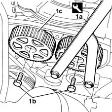
Applies to: engines: 1.6 16v; all production periods
Refit the timing belt and, with small rotations of the crankshaft, fit the second template without using force, the same way as the first template and lock it then remove the timing belt again and loosen the bolts fixing the second pulley still using the tool for counter-torque.
With both templates fitted and the crankshaft at zero in relation to the fixed reference, refit the timing drive belt as follows.
1. Fit it initially on the crankshaft gear.
2. Fit the belt on the oil pump gear.
3. Fit the belt on the fixed pulley.
4. Fit the belt on the inlet camshaft pulley.
5. Fit the belt on the exhaust camshaft pulley.
6. Lastly, fit the belt on the automatic tensioning device.
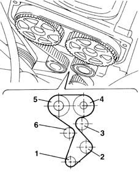
Applies to: engines: 1.6 16v; all production periods
1. Undo retaining bolts
2. Position the toothed belt tensioning tool.
3. Adjust the tool until the belt is as taut as possible, i.e. when the moving belt tensioner pointer is at the end of its travel.
4. Tighten the tensioner retaining nut.
| Name | Country |
|---|---|---|
2 | Belt tensioner | 1.860.876.000 |
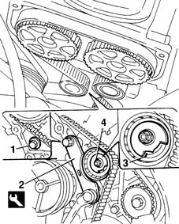
Applies to: engines: 1.6 16v; all production periods
Use the pulley tightening tool to tighten the camshaft pulley retaining bolts to the specified torque.
 | Fastening | Component | Ø | Value (daNm) |
|---|---|---|---|---|
- | Bolt | TIMING GEAR DRIVEN PULLEYS | M12 | 12 |
| Name | Country |
|---|---|---|
- | Counter-torque | 1.870.716.000 |
Remove the camshaft timing tools.
| Name | Country |
|---|---|---|
- | Template | 1.860.874.000 |
Remove the dial gauge together with the probe.
| Name | Country |
|---|---|---|
- | Probe mount | 1.860.895.000 |
Rotate the crankshaft through two revolutions in its normal direction of rotation.
1. Loosen the belt tensioner retaining nut and use tool (1a) to slightly release belt tension until moving reference (1b) is aligned with fixed reference (1c) on the tensioning device.
2. Tighten the tensioning device retaining nut to the specified torque.
| Name | Country |
|---|---|---|
1a | Belt tensioner | 1.860.876.000 |
| Fastening | Component | Ø | Value (daNm) |
|---|---|---|---|---|
2 | Bolt | MOBILE TIMING TENSIONER | M6 | 2.5 |
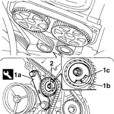
Applies to: engines: 1.6 16v; all production periods
Remove the tool and tighten the retaining bolt removed previously to the specified torque in order to fit the tensioning tool.
Remove the engine timing graduated disc and fixed reference
Refit the auxiliary shaft belt tensioner.
Refit the camshaft rear covers acting on the fixing nuts and connecting the earth leads secured to them.
4450B10 Front WHEEL (one) - R.R.
7055B42 Additional FRONT WHEEL ARCH (one), left or right - R.R.
1092B50 alternator/air conditioner compressor drive belt - adjust tension
1032D12 timing system protective cover(s) - r + r
Remove the vehicle from the ramp.
Connect the battery negative terminal.
Topics linked from this page (6)
- 1032D12 timing system protective cover(s) - r + r
- 1092B50 alternator/air conditioner compressor drive belt - adjust tension
- 4450B10 Front WHEEL (one) - R.R.
- 5510C14 ignition coil/s - r+r
- 5510D10 spark plugs - r+r
- 7055B42 Additional FRONT WHEEL ARCH (one), left or right - R.R.
Topics that link to this page (15)
- 0010M20 120,000km service coupon, emission control versions
- 0010M21 120000 km service coupon for emission control versions with air conditioner
- 1016B20 lh cylinder head extension - replace gasket
- 1016B24 rh cylinder head extension - replace gasket
- 1016C10 cylinder head - r + r and replace gasket
- 1020D12 front crank shaft oil seal cover - r + r and replace seals
- 1020D18 front crank shaft cover oil seal - replace
- 1028H10 connecting rod and piston set - r r
- 1028H20 piston with connecting rod - r r
- 1032B46 toothed drive pulley - r + r
- 1032B52 toothed driven pulley (one) - r + r
- 1032C18 mobile timing system tensioner - r + r for 24 valve engines
- 1032C32 fixed timing system tensioner (one) r + r
- 1036G10 camshaft controlling exhaust valves in top head - r + r with top head removed - includes replacement of top head
- 1036G20 camshaft controlling intake valves in top head - r + r with top head removed - includes replacement of top head if necessary